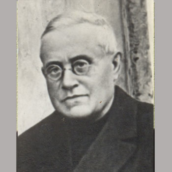

Isusovački blaženici
Svećenik
Bl. Ivan Krstitelj Ferreres Boluda
1861. – 1936.
Profesor moralne teologije i kanonskoga prava stradao je tijekom Španjolskoga građanskog rata. Starost i narušeno zdravlje nisu ga poštedjeli zatvora i zapuštenosti.
Tekst je preveden i prilagođen uz pomoć umjetne inteligencije.

Izvor slike
- Spomendan
- 29. prosinca
- Zaštitništvo
- Nije navedeno u izvoru
- Životni vijek
- 1861. – 1936.
- Djelovanje
- Obrazovanje i poučavanje vjere · Pisanje, znanost i umjetnost · Bolest i osobne kušnje · Progoni i progonstvo · Mučeništvo
- Razdoblje
- 19., 20. stoljeće
- Datum rođenja
- 28.11.1861.
- Mjesto rođenja
- L’Olleria, Valencia, Španjolska
- Datum smrti
- 29.12.1936.
- Mjesto smrti/mučeništva
- Zatvorska ambulanta, Valencia, Španjolska
- Okolnosti smrti/mučeništva
- Umro u zatvoru nakon moždanoga udara i uskraćivanja potrebne liječničke skrbi.
- Uloga
- Svećenik
- Mučenik
- Da
- Ostale oznake
- Profesor moralne teologije i kanonskoga prava; pisac
- Pripadnost
- Isusovac
- Drugi oblici imena
- Juan Bautista Ferreres Boluda · Juan
Životopis
Juan Bautista Ferreres Boluda rođen je 1861. u Olleríji kraj Valencije. U Družbu Isusovu ušao je 1888. Posvetio se nastavi i pisanju iz moralne teologije i kanonskoga prava. Predavao je u isusovačkom učilištu u Sarriài u Barceloni. Posljednje je zavjete položio 1900., a pomagao je kardinalu Gasparriju u pripravi Zakonika kanonskoga prava iz 1917.
Njegove posljednje godine pripadaju razdoblju ozbiljnoga ograničavanja redovničkoga života. Uredba objavljena u španjolskom službenom listu 24. siječnja 1932. ukinula je Družbu u Španjolskoj, naložila prestanak zajedničkoga života i odredila preuzimanje njezine imovine. To je pravni okvir koji je prethodio građanskom ratu, a ne opis istoga događaja kao nasilje 1936. Ferreres je unatoč raspuštanju ostao u zemlji.
Na početku rata uhićen je u Barceloni, ali pušten zbog starosti i slaboga zdravlja. Vratio se u Olleríu; sredinom kolovoza 1936. ponovno je ispitivan, a krajem mjeseca zatvoren. U zatvorskoj bolnici doživio je moždani udar. Bez potrebne skrbi nastupile su komplikacije od kojih je umro 29. prosinca. Njegova smrt povezana je s progonom jedanaestorice isusovaca u Valenciji i Gandíji.
Život i nasljeđe
Ferreresova je stručnost obuhvaćala i moralnu teologiju i crkveno pravo. Njegov književni ugled ne treba svesti na jednu određenu kasniju zatvorsku epizodu. U starosti je zbog slabosti najprije bio pušten, ali ga to nije trajno zaštitilo. Smrt u zatvorskoj ambulanti razlikuje njegov završetak od neposrednih strijeljanja drugih članova skupine. Nedostatna njega i komplikacije bolesti pripadaju njegovim osobnim okolnostima mučeništva. Zajednički naslov jedanaestorice zato ne znači jednu jednaku vrstu smrti za sve.
Tekst je preveden i prilagođen uz pomoć umjetne inteligencije.
Pročitaj više na izvornoj stranici ↗